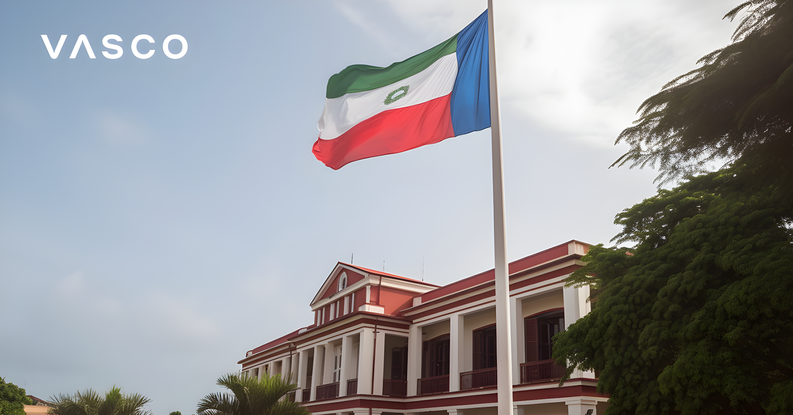

Nichée dans le golfe de Guinée, la Guinée Équatoriale constitue une anomalie géolinguistique fascinante : elle est le seul pays du continent africain à avoir l'espagnol comme langue officielle. Héritage de la colonisation espagnole, cette singularité façonne son identité, ses alliances diplomatiques et sa place au sein de la communauté hispanophone mondiale.
Sur les cinquante-quatre pays que compte l'Afrique, la Guinée Équatoriale occupe une place radicalement unique : elle est la seule nation dont l'espagnol figure parmi les langues officielles. Ce statut est le produit direct de quatre siècles de présence espagnole, qui a profondément marqué les élites politiques, le système éducatif et l'administration du pays.
Contrairement à ses voisins — le Cameroun francophone et anglophone, le Gabon francophone — la Guinée Équatoriale s'inscrit dans l'orbite culturelle de l'Amérique latine autant que dans celle de l'Afrique centrale. Cette appartenance double lui confère une position diplomatique originale, à la croisée de l'Union africaine et de la communauté des nations ibéro-américaines.
La présence espagnole en Guinée débute dès le traité de Pardo (1778), par lequel le Portugal cède à l'Espagne les territoires du golfe de Guinée, notamment l'île de Fernando Poo (aujourd'hui Bioko) et le territoire continental du Río Muni. Paradoxalement, l'Espagne ne s'installe durablement qu'au XIXe siècle, développant des plantations de cacao sur l'île de Bioko à l'aide d'une main-d'œuvre importée de toute l'Afrique de l'Ouest.
L'indépendance, proclamée le 12 octobre 1968, marque la naissance d'un État dont l'élite est hispanisée mais dont la population reste majoritairement locutrice de langues bantouanes — principalement le fang sur le continent, le bubi sur l'île. L'espagnol devient alors la langue de l'État et de l'administration, tandis que les langues locales restent vivaces dans la sphère domestique et rurale.
Traité de Pardo : le Portugal cède les territoires du golfe de Guinée à l'Espagne. Début théorique de la souveraineté espagnole.
Développement des plantations de cacao sur l'île de Bioko. Implantation durable de l'administration et des missions catholiques espagnoles.
Indépendance. Francisco Macías Nguema, premier président, instaure rapidement une dictature sanglante. L'espagnol demeure langue officielle.
Coup d'État de Teodoro Obiang Nguema Mbasogo, neveu du premier président. Début d'un régime autoritaire qui perdure jusqu'à aujourd'hui.
Adhésion à la Francophonie (OIF) : ajout du français comme langue officielle, suite aux pressions de la France et du Gabon voisin.
Adhésion à la CPLP : le portugais devient la troisième langue officielle. La Guinée Équatoriale devient le seul pays au monde à avoir ces trois langues officielles simultanément.
Depuis 2010, la Guinée Équatoriale est dotée de trois langues officielles : l'espagnol, le français et le portugais. Cette triple appartenance linguistique est sans équivalent dans le monde : aucun autre État ne partage simultanément ces trois grandes langues romanes en tant que langues d'État. Elle reflète les stratégies d'intégration régionale du régime Obiang, désireux de multiplier les partenariats diplomatiques en rejoignant successivement la Francophonie (1997) et la CPLP lusophone (2010).
En pratique, ce trilinguisme officiel masque de profondes asymétries. L'espagnol reste la langue dominante de l'élite, de l'enseignement supérieur et de l'administration centrale. Le français, utilisé dans certaines régions frontalières, permet les échanges avec les voisins gabonais et camerounais. Le portugais, quant à lui, reste largement formel et peu pratiqué dans la population.
| Langue | Statut | Usage effectif |
|---|---|---|
| Espagnol | Officielle (1968) | Administration, éducation, médias |
| Français | Officielle (1997) | Zones frontalières, diplomatie |
| Portugais | Officielle (2010) | Usage très limité |
| Fang | Nationale | Langue maternelle ~80 % continent |
| Bubi | Nationale | Île de Bioko, usage quotidien |
L'appartenance à la sphère hispanophone confère à la Guinée Équatoriale une place singulière dans les institutions internationales. Elle est membre de l'Organisation des États ibéro-américains (OEI), aux côtés des vingt-deux autres pays latino-américains et ibériques. C'est le seul État africain à siéger dans cette organisation, ce qui lui offre des passerelles vers l'Amérique latine en matière de coopération éducative et culturelle.
Des liens étroits existent notamment avec l'Espagne, ancienne métropole qui reste un partenaire commercial et diplomatique clé. La découverte de gisements de pétrole offshore dans les années 1990 a transformé la donne économique du pays, attirant des entreprises étrangères, dont espagnoles, et projetant brièvement la Guinée Équatoriale au rang de troisième producteur pétrolier d'Afrique subsaharienne.
« La Guinée Équatoriale est une fenêtre de l'Afrique sur le monde hispanique, et une fenêtre de l'Hispanoamérique sur l'Afrique. »
— Donato Ndongo-Bidyogo, écrivain équato-guinéen, figure de la littérature hispano-africaineL'une des manifestations les plus riches de cette singularité linguistique est l'existence d'une littérature en espagnol produite en Afrique. Des auteurs comme Donato Ndongo-Bidyogo ou Juan Tomás Ávila Laurel ont contribué à forger une expression littéraire originale, qui mêle l'héritage colonial espagnol, les traditions orales bantoues et la critique politique du régime Obiang. Cette littérature reste méconnue en dehors des cercles académiques hispanistes, mais constitue un patrimoine culturel singulier.
La Guinée Équatoriale demeure une curiosité géolinguistique dont le destin hispanophone est loin d'être stabilisé. La pression du français — langue des voisins et de nombreuses organisations régionales africaines — est constante. Le pétrole, en déclin depuis le pic des années 2010, ne garantit plus la même croissance. Ce pays de 1,6 million d'habitants incarne pourtant une preuve que l'espagnol est bien une langue mondiale, capable de s'enraciner jusqu'au cœur de l'Afrique équatoriale. Son maintien comme langue vivante dépendra de la qualité de l'enseignement, de l'ouverture culturelle et de la capacité du pays à tisser des liens réels — et pas seulement formels — avec la vaste famille des nations hispanophones.
Enclavada en el golfo de Guinea, Guinea Ecuatorial constituye una anomalía geolingüística fascinante: es el único país del continente africano que tiene el español como lengua oficial. Herencia de la colonización española, esta singularidad moldea su identidad, sus alianzas diplomáticas y su lugar en la comunidad hispanohablante mundial.
De los cincuenta y cuatro países que componen África, Guinea Ecuatorial ocupa un lugar radicalmente único: es la única nación cuyo español figura entre las lenguas oficiales. Este estatus es el producto directo de cuatro siglos de presencia española, que marcó profundamente a las élites políticas, el sistema educativo y la administración del país.
A diferencia de sus vecinos —el Camerún francófono y anglófono, el Gabón francófono—, Guinea Ecuatorial se inscribe en la órbita cultural de América Latina tanto como en la del África central. Esta doble pertenencia le confiere una posición diplomática original, en la encrucijada de la Unión Africana y la comunidad de naciones iberoamericanas.
La presencia española en Guinea comienza con el tratado de El Pardo (1778), por el que Portugal cede a España los territorios del golfo de Guinea, en particular la isla de Fernando Poo (hoy Bioko) y el territorio continental de Río Muni. Paradójicamente, España no se instala de forma duradera hasta el siglo XIX, desarrollando plantaciones de cacao en la isla de Bioko con mano de obra importada de toda África occidental.
La independencia, proclamada el 12 de octubre de 1968, marca el nacimiento de un Estado cuya élite está hispanizada pero cuya población sigue siendo mayoritariamente hablante de lenguas bantúes —principalmente el fang en el continente, el bubi en la isla. El español se convierte entonces en la lengua del Estado y de la administración, mientras que las lenguas locales permanecen vivas en el ámbito doméstico y rural.
Tratado de El Pardo: Portugal cede los territorios del golfo de Guinea a España. Inicio teórico de la soberanía española.
Desarrollo de las plantaciones de cacao en la isla de Bioko. Implantación duradera de la administración y las misiones católicas españolas.
Independencia. Francisco Macías Nguema, primer presidente, instaura rápidamente una dictadura sangrienta. El español permanece como lengua oficial.
Golpe de Estado de Teodoro Obiang Nguema Mbasogo, sobrino del primer presidente. Inicio de un régimen autoritario que perdura hasta hoy.
Adhesión a la Francofonía (OIF): el francés se añade como lengua oficial, bajo las presiones de Francia y del vecino Gabón.
Adhesión a la CPLP: el portugués se convierte en la tercera lengua oficial. Guinea Ecuatorial pasa a ser el único país del mundo con estas tres lenguas oficiales simultáneamente.
Desde 2010, Guinea Ecuatorial cuenta con tres lenguas oficiales: el español, el francés y el portugués. Esta triple pertenencia lingüística no tiene equivalente en el mundo: ningún otro Estado comparte simultáneamente estas tres grandes lenguas romances como lenguas de Estado. Refleja las estrategias de integración regional del régimen Obiang, deseoso de multiplicar las asociaciones diplomáticas uniéndose sucesivamente a la Francofonía (1997) y a la CPLP lusófona (2010).
En la práctica, este trilingüismo oficial oculta profundas asimetrías. El español sigue siendo la lengua dominante de la élite, la enseñanza superior y la administración central. El francés, utilizado en algunas regiones fronterizas, facilita los intercambios con los vecinos gaboneses y cameruneses. El portugués, por su parte, sigue siendo en gran medida formal y poco practicado por la población.
| Lengua | Estatus | Uso efectivo |
|---|---|---|
| Español | Oficial (1968) | Administración, educación, medios |
| Francés | Oficial (1997) | Zonas fronterizas, diplomacia |
| Portugués | Oficial (2010) | Uso muy limitado |
| Fang | Nacional | Lengua materna ~80 % continente |
| Bubi | Nacional | Isla de Bioko, uso cotidiano |
La pertenencia a la esfera hispanohablante otorga a Guinea Ecuatorial un lugar singular en las instituciones internacionales. Es miembro de la Organización de Estados Iberoamericanos (OEI), junto a los otros veintidós países latinoamericanos e ibéricos. Es el único Estado africano en esta organización, lo que le ofrece pasarelas hacia América Latina en materia de cooperación educativa y cultural.
Existen vínculos estrechos con España, antigua metrópoli que sigue siendo un socio comercial y diplomático clave. El descubrimiento de yacimientos de petróleo offshore en los años noventa transformó la situación económica del país, atrayendo empresas extranjeras —entre ellas españolas— y proyectando brevemente a Guinea Ecuatorial al rango de tercer productor de petróleo del África subsahariana.
« Guinea Ecuatorial es una ventana de África al mundo hispánico, y una ventana de Hispanoamérica hacia África. »
— Donato Ndongo-Bidyogo, escritor ecuatoguineano, figura de la literatura hispanoafricanaUna de las manifestaciones más ricas de esta singularidad lingüística es la existencia de una literatura en español producida en África. Autores como Donato Ndongo-Bidyogo o Juan Tomás Ávila Laurel han contribuido a forjar una expresión literaria original, que mezcla el legado colonial español, las tradiciones orales bantúes y la crítica política al régimen Obiang. Esta literatura sigue siendo poco conocida fuera de los círculos académicos hispanistas, pero constituye un patrimonio cultural singular.
Guinea Ecuatorial sigue siendo una curiosidad geolingüística cuyo destino hispanohablante dista mucho de estar estabilizado. La presión del francés —lengua de los vecinos y de numerosas organizaciones regionales africanas— es constante. El petróleo, en declive desde el pico de los años 2010, ya no garantiza el mismo crecimiento. Sin embargo, este país de 1,6 millones de habitantes demuestra que el español es una lengua verdaderamente mundial, capaz de arraigar hasta el corazón del África ecuatorial. Su mantenimiento como lengua viva dependerá de la calidad de la enseñanza, de la apertura cultural y de la capacidad del país para tejer vínculos reales —y no solo formales— con la vasta familia de las naciones hispanohablantes.